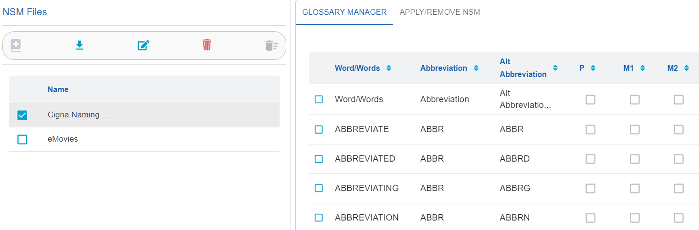
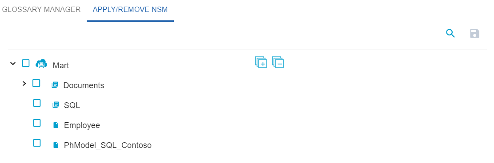

Apply NSM Files to Models in Mart Library
Once you have added NSM files to the NSM File Management repository, you can use them on models in your mart library.
To apply NSM files, follow these steps:
- In the NSM Files pane, select an NSM file.
NSM file opens in the glossary manager tab.

- Click Apply/Remove NSM tab.
A list of all the catalogs and models available in the mart is displayed.

- Select models to which you want to apply the NSM File.
Note: If you select a folder, all the models in the folder are selected. You cannot unselect a few models under the folder then. If you want to select only a few models under a folder, select them individually.
- Click .
The NSM file is applied to the selected models and a success message is displayed. You can view a report of all the models to which an NSM file is applied.
Note:
- When you apply an NSM file to a model, it is applied at the model-level. Therefore, it is applied to all versions of the model.
- Once an NSM file is applied to a mart model, you cannot detach it.